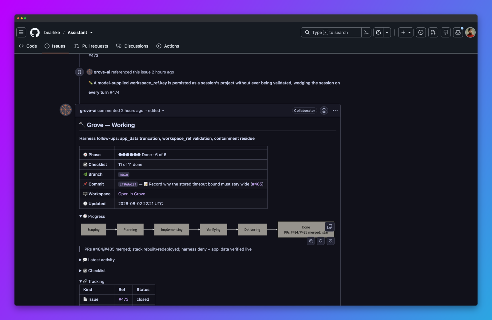

Connect each workspace to its purpose
Grove ties each workspace to the ticket it serves. A branch is the work, the ticket is why it exists, and the branch name is the source of truth.

Work arrives from the tracker
- Linear, GitHub and Gitea, each off until you configure ticket providers.
- An issue or a pull request, attached the same way.
- Grove reads the ticket off the branch name, so a workspace knows its ticket before you tell it.
- GitHub and Gitea share a number space, so a bare number needs a prefix or a URL.
What the link buys you
ENG-123, GH#42, GTEA#5, with the resolving pull request behind an arrow.
Working the ticket
Grove keeps one comment on every ticket a workspace is working, and rewrites it in place rather than posting a feed.
- It carries the task phase, checklist, branch, latest commit and a link into Grove.
- It flushes at most once every few seconds, so a busy agent costs one edit.
- It reaches every ticket named, so the issue and the pull request find each other.
- It stops and says so when the workspace ends, keeping the last phase and a transcript link.
Issue ops covers the body in detail.
Several tickets, one workspace
- Each attached ticket gets its own phase claim rather than sharing the workspace's answer.
- The issue can read
verifyingwhile its pull request already readsdelivering, and each comment carries only its own claim. - task phase explains how an agent reports one, and
--ticketand--blockedongrove phaseset one from outside. - One rank rule everywhere. Pull requests above issues, open above draft above settled, then the furthest along its phase first.
- Rank tracks progress, not recency, so a
doneticket sits below one still in progress.
The assignee is the work queue
Grove uses the tracker's own assignee field in both directions, off by default.
- Outbound. Grove assigns its bot account to tickets its workspaces hold, so the fleet's work is findable with the tracker's own filters.
- Inbound. The daemon polls for open issues assigned to that account with no workspace behind them and starts one with the title, body and thread. No CI runner, no webhook.
- A handover is durable, so the same ticket is never picked up twice.
- At most
pickup_max_activepickups run at once, the next waits a tick, and a provider error backs that provider off rather than retrying into a rate limit. - The bot stays assigned when work finishes, since the assignment is the record of who did it.
Creating a workspace from a ticket
Pass an optional ticket: {provider, id} at create time and Grove fetches the title and builds a branch name around it.
Linear ENG-123 titled Short description yields grove/ENG-123-short-description, and parsing that branch later returns the same ref, since the key is in the name.
Pull requests
- A pull request is a ticket reference like an issue, carrying
kind: "pull_request". Same registry, same attach and detach, same status comment. - Merged is not closed. A merged pull request reports
status: "merged", and Grove fetches the pulls endpoint to tell them apart. - Several issues resolve to one pull request, rendered as an arrow, issues first, colored by its state.
What Grove still never does
Grove writes comments, and assignees once you turn that on. Nothing else on your tracker moves.
- Starting or stopping a workspace never moves a ticket to In Progress or Done. That stays yours.
- Nothing listens for provider events. Grove polls, or fetches on a detail view.
Deriving refs from the branch name
Grove parses the branch for every enabled provider when it creates or adopts one. Each match becomes a ticket_ref holding provider, id and kind, and the detail is fetched on demand. The default prefix is grove/.
| Provider | Recognizes | Example branch | Derived ref |
|---|---|---|---|
| Linear | Team key plus number (ENG-123), anywhere in the name. |
grove/ENG-123-short-description |
ENG-123 |
| GitHub | A bare leading number, built-in gh-, or your branch_prefix. |
42-short-description or gh-42-short-description |
GH#42 |
| Gitea | A bare leading number, built-in gitea-/gtea-, or your branch_prefix. |
5-short-description or gtea-5-short-description |
GTEA#5 |
The bare number is deliberately ambiguous
A bare number matches both Gitea and GitHub when both are enabled, so Grove stores both refs and marks the workspace ambiguous. Attach the right ref and detach the wrong one to resolve it, or name the provider in the branch with ENG-123, gh-42 or gtea-5.
Manual attach and detach
Derived refs are a starting point. Attach a URL, a bare number, an owner/repo#42 ref or a Linear key, where a bare number follows the same branch parsing, and attaching again corrects a guess without touching the branch.
The MCP tools accept the same ref. See the CLI reference.
API surface
The daemon exposes the ticket layer over HTTP.
| Method and path | Purpose |
|---|---|
GET /tickets/providers |
List enabled providers and config (no secrets). |
GET /tickets/assigned |
Tickets assigned to you across enabled providers. |
GET /tickets/{provider}/{id} |
Fetch one ticket. Reports kind and merged state for a pull request. |
POST /workspaces/{id}/tickets |
Attach a resolved {provider, id} or a raw {ref}. |
DELETE /workspaces/{id}/tickets/{provider}/{id} |
Detach by resolved provider and id. |
DELETE /workspaces/{id}/tickets?ref=... |
Detach by the same raw ref shapes. |
Responses carry ticket_refs for ticket pills.